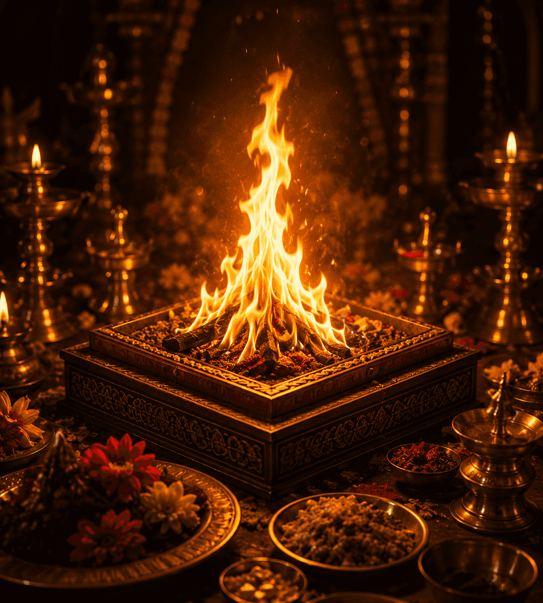
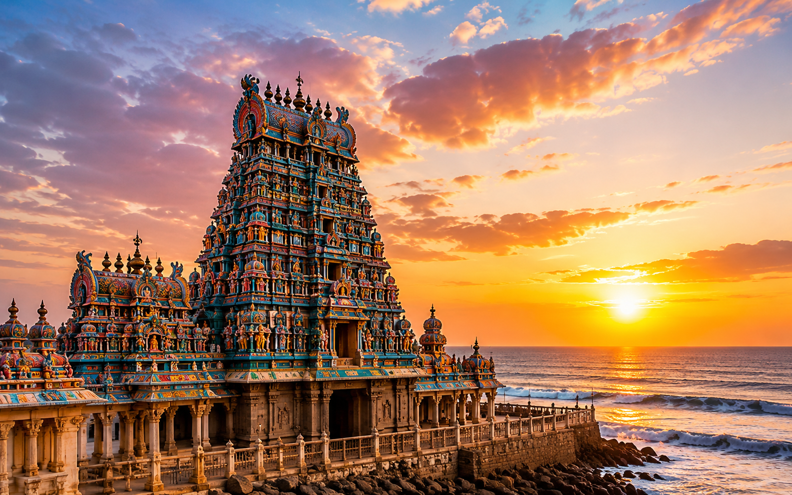
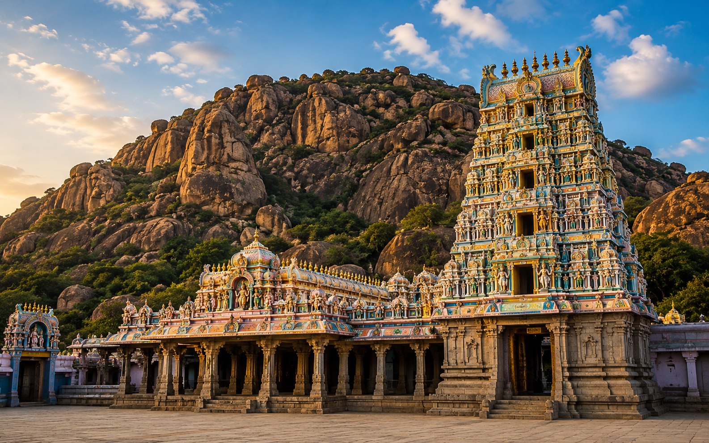
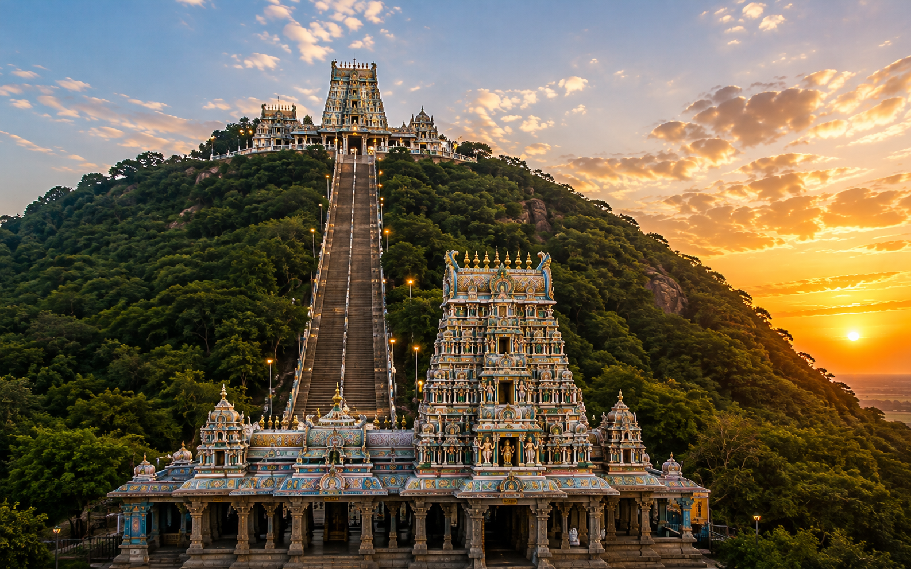

A powerful Vedic fire ritual performed with sacred mantras to defeat enemies, remove obstacles and invite success, peace and prosperity in your life.

Shatru Samhara Homa is a sacred Vedic fire ritual performed with specific mantras and offerings to seek divine protection and overcome adversaries, obstacles and negativity.
This powerful ritual helps in removing negativity, ensuring obstacles and bringing success, peace and prosperity in life.

A sacred coastal temple where Lord Subramanya is worshipped as the victor over Surapadman. It symbolizes courage, protection and the triumph of good over evil.

An ancient and historic temple, believed to be the divine wedding place of Lord Subramanya. It brings harmony, removes obstacles and blesses devotees with strength.

A serene hill temple where Lord Subramanya is worshipped for peace and relief from challenges. It fills life with confidence, clarity and positive energy.
The abode of wisdom and simplicity. Lord Subramanya here is worshipped as Dhandayudhapani, granting devotees spiritual growth, discipline and inner strength.
Shields from negativity and harmful influences.
Grants success over enemies and challenges.
Brings mental peace and emotional balance.
Empowers to face life's battles with confidence.
Enhances devotion, wisdom and inner growth.